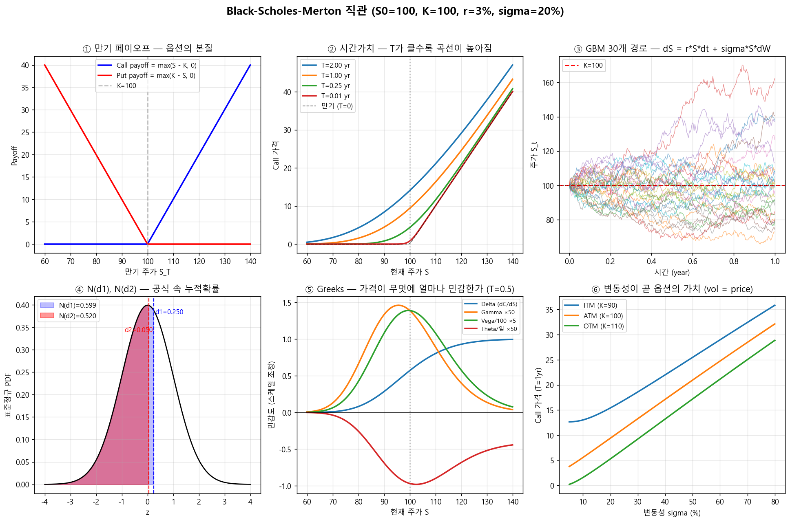

주식의 "공정한 가격"은 비교적 단순하다 — 그 회사가 앞으로 벌어들일 현금흐름의 현재가치. 하지만 옵션은 "미래의 어떤 조건이 충족되면 받는 권리"이기 때문에, 미래 주가가 어떻게 움직일지 모르는 상태에서 오늘의 가격을 매겨야 한다.
옵션 = "미래의 정해진 가격에 사거나 팔 수 있는 권리" (의무가 아님).
| 용어 | 기호 | 뜻 |
|---|---|---|
| 현재 주가 (spot) | $S_0$ | 오늘 시장의 주식 가격 |
| 행사가 (strike) | $K$ | 미래에 사고팔 약속 가격 |
| 만기 (maturity) | $T$ | 이 권리가 살아 있는 기간 (년 단위) |
| 콜옵션 (call) | $C$ | $K$에 살 권리 |
| 풋옵션 (put) | $P$ | $K$에 팔 권리 |
만기 시점에 옵션이 가져다주는 돈 (페이오프, payoff)은 단순하다:
$$ \text{Call payoff} = \max(S_T - K,\ 0), \qquad \text{Put payoff} = \max(K - S_T,\ 0) $$주가가 $K$를 넘기면 콜은 차이만큼 벌고, 못 넘기면 0. 풋은 그 반대. 문제는 — 만기는 미래고, $S_T$는 모른다. 그러니 오늘 얼마에 사야 공정한가?
순진하게 생각하면: "미래 페이오프의 기댓값을 현재가치로 할인하면 되지 않나?"
$$ C \stackrel{?}{=} e^{-rT}\,\mathbb{E}[\max(S_T - K,\ 0)] $$맞는 방향이다. 하지만 두 가지 어려움이 있다:
BSM은 주가가 다음 확률미분방정식을 따른다고 가정한다:
$$ dS_t = \mu\,S_t\,dt + \sigma\,S_t\,dW_t $$| 항 | 해석 |
|---|---|
| $\mu\,S_t\,dt$ | "평균적으로" 연 $\mu$ 비율로 자라남 (drift, 추세) |
| $\sigma\,S_t\,dW_t$ | 그 위에 표준편차 $\sigma$ 짜리 무작위 진동 (diffusion, 변동) |
| $dW_t$ | 브라운 운동 — 무한히 작은 정규분포 충격 |
이 SDE를 풀면 주가의 로그가 정규분포를 따른다 — 즉 주가는 로그정규분포:
$$ S_T = S_0 \exp\!\left( \left(\mu - \tfrac{1}{2}\sigma^2\right)T + \sigma\sqrt{T}\,Z \right), \quad Z \sim \mathcal{N}(0,1) $$여기가 BSM이 노벨상을 받은 이유다. 핵심 아이디어:
구체적으로: 매 순간 주식을 $\Delta_t$ 주만큼 보유하고, 나머지는 무위험 채권에 넣는다. $\Delta_t$를 잘 조절하면 이 포트폴리오의 가치 변화가 옵션의 가치 변화와 정확히 같아진다. 이 조정 비율 $\Delta_t = \partial C/\partial S$ 가 바로 델타 헤지.
이때 신기한 일이 벌어진다 — 포트폴리오의 위험을 완전히 상쇄했으므로, 이 포트폴리오의 수익률은 무위험 이자율 $r$ 과 같아야 한다. 주가의 실제 추세 $\mu$ 는 공식에서 사라지고, $r$로 대체된다. 그래서 가격은 사람마다 다른 위험 선호와 무관해진다.
위 PDE의 해 — 이게 그 유명한 BSM 공식이다:
$$ \boxed{\,C = S_0\,N(d_1) - K\,e^{-rT}\,N(d_2)\,} $$ $$ d_1 = \frac{\ln(S_0/K) + (r + \tfrac{1}{2}\sigma^2)T}{\sigma\sqrt{T}}, \qquad d_2 = d_1 - \sigma\sqrt{T} $$$N(\cdot)$ 은 표준정규의 누적분포함수. 두 항을 따로 읽으면 의미가 분명해진다:
| 항 | 의미 |
|---|---|
| $S_0\,N(d_1)$ | 옵션 행사 시 받게 되는 주식의 기대 현재가치 (확률 $\sim N(d_1)$ 가중) |
| $K\,e^{-rT}\,N(d_2)$ | 옵션 행사 시 내야 하는 행사가의 기대 현재가치 (행사될 확률이 $N(d_2)$) |
풋옵션은 put-call parity로 자연스럽게 따라온다:
$$ P = K\,e^{-rT}\,N(-d_2) - S_0\,N(-d_1) $$
notebooks/00_bsm_intuition.py.
| # | 그림 | 읽는 법 |
|---|---|---|
| ① | 만기 페이오프 | 옵션이 만기에 주는 돈은 hockey-stick 모양. $K$를 기준으로 한쪽만 이득. |
| ② | 시간가치 | 같은 주가라도 만기까지 시간 $T$가 길수록 옵션이 비싸다. $T \to 0$이면 BSM 곡선은 페이오프(검은 점선)에 수렴. |
| ③ | GBM 30개 경로 | "주가가 무작위로 어떻게 움직일 수 있는지" 30번 시뮬한 미래. 이 경로들의 만기값으로 평균을 내면 ②번 가격이 나온다 (몬테카를로 가격). |
| ④ | $N(d_1), N(d_2)$ | 공식의 $N(d_1)$, $N(d_2)$는 결국 표준정규 위 두 점까지의 누적확률 — 빨강·파랑 면적. |
| ⑤ | Greeks | 가격이 변수에 얼마나 민감한지. ATM($S=K$) 근처에서 Gamma·Vega가 최대. |
| ⑥ | Vol = Price | 변동성 $\sigma$ 가 커질수록 옵션은 단조증가. 옵션 트레이더가 "변동성을 거래한다"고 말하는 이유. |
BSM 가격은 다섯 변수($S, K, T, r, \sigma$)의 함수다. 실무 트레이더는 가격 자체보다 각 변수에 대한 편미분으로 포지션의 위험을 관리한다. 이 편미분들에 그리스 문자 이름을 붙인 게 Greeks.
| 이름 | 기호 | 정의 | 현실적 의미 |
|---|---|---|---|
| Delta | $\Delta$ | $\partial C/\partial S$ | 주가 1원 변할 때 옵션 가격 변화. 헤지 비율 그 자체. |
| Gamma | $\Gamma$ | $\partial^2 C/\partial S^2$ | Delta가 얼마나 빨리 변하는지. ATM에서 최대 → 자주 헤지해야 함. |
| Vega | $\nu$ | $\partial C/\partial \sigma$ | 변동성 1% 변할 때 가격 변화. "옵션은 변동성을 사고파는 것"의 정량. |
| Theta | $\Theta$ | $\partial C/\partial t$ | 시간이 하루 지날 때 가격이 얼마나 닳는지 (보통 음수 — 시간가치 소멸). |
| Rho | $\rho$ | $\partial C/\partial r$ | 이자율 변할 때 영향. 다른 그릭에 비해 보통 작다. |
pricing.greeks.analytic.call_greeks 가 BSM의 닫힌 형태로 모든 Greek을 한 번에 계산한다.
pricing.greeks.bumping 은 수치미분 (finite difference) 방식으로 같은 값을 검증한다.
BSM의 우아함은 가정의 단순함에서 온다. 그런데 그 가정들이 현실에서는 깨진다:
| BSM 가정 | 현실 | 대안 |
|---|---|---|
| 변동성 $\sigma$ 상수 | 변동성도 시간에 따라 출렁임 (volatility of volatility) | Heston 모델 — $\sigma^2$도 SDE를 따름 |
| 주가는 연속 (점프 없음) | 실적 발표·뉴스로 갭 발생 | Merton jump-diffusion, Bates 모델 |
| 모든 행사가에서 $\sigma$ 동일 | 실제 시장에서는 $K$별로 IV가 다름 (Volatility Smile/Skew) | 로컬볼/SVI 등 IV 곡면 캘리브레이션 |
| 유럽형 (만기에만 행사) | 미국형·버뮤다·자동조기상환(ELS) 등 다양 | 이항/PDE/몬테카를로 |
| 연속·무비용 헤지 가능 | 거래비용·유동성 제약 존재 | 딥러닝 기반 Deep Hedging |
quant-lab)의 5-Layer 구조는 정확히 이 한계들을 하나씩 푸는 여정이다: